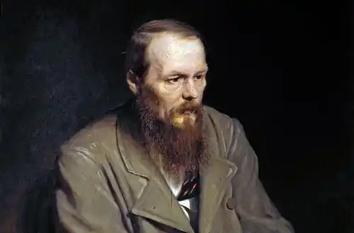
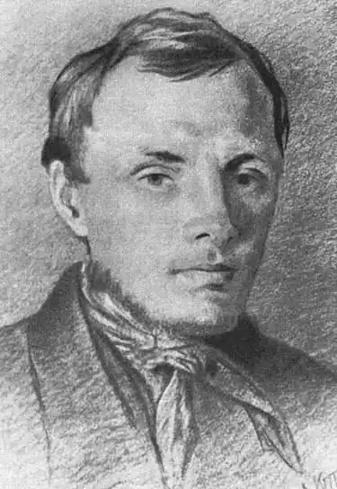

ДОСТОЄВСЬКИЙ, Федір Михайлович (Достоевский, Фёдор Михайлович — 11.11.1821, Москва — 09.02. 1881, Петербург) — російський письменник.Народився у багатодітній сім'ї штаб-лікаря московської Маріїнської лікарні для бідних. Батько — дворянин, матір походила з давньомосковського купецького роду. Перші 16 років життя Достоєвський провів у скромній казенній квартирі при лікарні. З дитинства найближчим другом був на рік старший брат Михайло. Попри скромні статки, батько зміг дати синам добру освіту у приватному пансіоні Л. Чермака, одному з найкращих у Москві. Літературні зацікавлення братів визначилися рано. Під впливом В. Скотта й А. Радкліфа Федір створював "романи з венеційського життя"; журнал "Бібліотека для читання", підписаний для синів батьком, знайомив з новітньою зарубіжною літературою — О. де Бальзаком, Ж. Жаненом, Е. Т. А. Гофманом та ін. З російських авторів у сім'ї любили М. Карамзіна, В. Жуковського, О. Пушкіна. Достоєвський виховувався "у родині російській і побожній", де знайомилися з Євангелієм "чи не з раннього дитинства". "Мені було всього лише десять років, коли я знав майже всі головні епізоди російської історії з Карамзіна, якого вголос вечорами читав нам батько", — згадував згодом письменник. Після смерті від сухот матері навесні 1837 р. батько повіз старших синів у Петербург і віддав у підготовчий пансіон К. Костомарова, після закінчення якого обидва брати повинні були стати "кондукторами" Головного інженерного училища, куди, проте, прийняли лише Федора — старший брат не пройшов медичної комісії і його відправили на службу у Ревельську інженерну команду.
Вперше Достоєвський на тривалий час розлучився з товаришем дитячих ігор. Проте зв'язок між братами не переривався завдяки жвавому листуванню, де обговорювалася творчість Гомера, Ж. Расі-на, Й. В. Гете, О. де Бальзака, В. Гюго, і в першу чергу, Ф. Шиллера, яким Достоєвський услід за братом "марив" і якого "визубрив усього напам'ять". У цих листах висловлені думки, які визначили духовний пошук усього життя Достоєвського: "Людина є таємницею. її потрібно відгадати, і якщо будеш її відгадувати все життя, то не кажи, що згайнував час; я займаюся цією таємницею, оскільки хочу бути людиною"; "природа, душа, Бог, любов ... пізнаються серцем, а не розумом".
У 1839 р. несподівано помер батько Достоєвського (за офіційною версією, від апоплексичного удару). Ймовірніше, проте, що грубого і дріб'язково-уїдливого поміщика (у 1831 р. Достоєвські купили два невеликі сільця у Тульській губернії, куди маленький Достоєвський упродовж кількох років приїжджав на літні канікули) вбили селяни. Новина про смерть батька приголомшила юнака і спровокувала важкий нервовий приступ — передвістя майбутньої епілепсії, до якої в нього була спадкова схильність. Училище, в якому Достоєвський провчився майже шість років (1838-1843), Достоєвський вважав своєю "помилкою". Попри те, у ньому він суттєво поповнив свою освіту. Найголовніше, чого Достоєвський набув, — відчуття форми, перш за все просторової, архітектурної. Окрім майстерних міських пейзажів, що пронизують усі його твори, це підтверджують чудові "психологічні" портрети "скривдженого" будиночка у "Білих ночах" чи рогожинського дому в "Ідіоті". Не прослуживши й року після здобутої спеціальності, Достоєвський в серпні 1844 р. вийшов у відставку в чині поручника. Тоді ж за невелику одноразово виплачену суму, з якою вирішив розпочати нове життя, відмовився від спадкових прав на тульські маєтки. Тепер єдине джерело його прибутку — література. У середині 1844 р. у журналі "Репертуар і пантеон" з'явилася перша друкована робота Д. — переклад роману О. де Бальзака "Євгенія Гранде". Упродовж 1844—1845 pp. Достоєвський захоплено працював над своїм першим романом "Бідні люди" ("Бедные люди"). 15 січня 1846 р. його романом відкрився "Петербурзький збірник" ("Петербургский сборник"), альманах "натуральної школи". Ідеолог початкового етапу "гоголівського напряму", В. Бєлінський цінував у "Бідних людях" "гуманну думку", "дивовижну істину у змалюванні дійсності", але водночас і дорікав за багатослів'я та надмірну "балакучість". У "гоголівському світі" автор "Бідних людей" зробив, за словами М. Бахтіна, "коперниківський переворот", обравши предметом зображення "не дійсність героя, а його самосвідомість як дійсність другого порядку". Епістолярна форма "Бідних людей" підкреслювала значущість "нового слова", яке Дєвушкін каже особисто. Недозріла, з точки зору В. Бєлінського, "манера" Достоєвського була новаторським прийомом, що дозволяв висвітити зсередини процес становлення особистості, ствердити гідність "маленької людини". Внутрішня доля особистості — справжня тема вже найперших, "чиновницьких", творів Достоєвського. Починаючи з "Хазяйки", він практично заперечує і традиційну "гоголівську" тематику — його героєм стає "мрійник", відірваний від реальності дивак, котрий живе у світі романтичних ілюзій. І Ординов, і герой "Білих ночей" ("Белые ночи", 1848) — люди освічені, обдаровані; вони дотримуються поглядів, близьких самому авторові. Невипадково поява проблеми "мрійництва" у Достоєвського збігається із захопленням утопічним соціалізмом, участю у гуртках бр. Бекетових, М. Петрашевського, С. Дурова. У "Петербурзькому літописі" ("Петербургская летопись", 1847) Достоєвський писав, що "...увесь Петербург є не чимось іншим, як зібранням величезної кількості маленьких гуртків", оцінюючи останні як своєрідну перехідну сходинку між усамітненням і справжнім суспільним життям, котра ближча, проте, до першого полюсу. Герой "Білих ночей" не лише до певної міри автопортрет Д. 40-х pp., а й збірний портрет його друзів по гуртках. "Мрійництво "Білих ночей" не поодиноке у творчості Достоєвського. Йому відведене місце і в "Бідних людях", і в "Неточці Незвановій"; ...воно розкривається в "Хазяйці" (Комарович В.). Напівхристиянський ідеал утопістів, нудьга за "новим містом", де всі будуть "наче брати з братами" (Настенька з "Білих ночей"), прослідковуються у мрійництві багатьох героїв раннього Достоєвського. Сам термін "мрійництво", перейшовши у зрілу творчість, буде до кінця життя осмислюватися письменником у зв'язку з соціалістичними ідеями. Гуманізм, усвідомлений в антропологічному дусі, одухотворює всі твори Достоєвського 40-х pp. Літературні зацікавлення домінували в утопічно-гуманістичних гуртках 2-ої пол. 40-х pp., зокрема і в гуртку "петрашевців", який відвідував і Достоєвського. Проте у зв'язку з подіями французької революції 1848 р. і тією роллю, яку відіграли в ній соціалісти, уряд вирішив припинити поширення утопічних ідей. До Петрашевського був підісланий провокатор, і в ніч із 22 на 23 квітня 1849 р. Достоєвського разом з іншими учасниками заарештували й ув'язнили у Петропавлівській фортеці. Мужньо переживши семимісячне слідство й обряд страти 24 грудня 1849 p., стоячи біля ешафота, він почув рескрипт про несподіване помилування:"...відставного поручника Достоєвського за ... участь у злочинних намірах, поширення листа літератора Бєлінського, сповненого зухвалими висловами проти православної церкви та верховної влади... позбавити всіх прав власності та заслати на каторжанську роботу у фортецях на 4 роки, а потім рядовим". У січні 1850 р. Достоєвського доправили в Омський острог. Чотири роки провів письменник у "мертвому домі". Після виходу з нього Достоєвського зарахували рядовим у Сибірський 7-й лінійний батальйон, розквартирований у Семипалатинську, куди його й доправили по етапу у березні 1854 р. Після смерті Миколи І і початку ліберального царювання Олександра II покарання Достоєвського, як і багатьох політичних в'язнів, було пом'якшене. Незабаром Достоєвському надали чин унтер-офіцера, а згодом — прапорщика, а також повернули колишні дворянські права. У відставку Достоєвський вийшов у чині під-поручника у 1859 р. У 1857 р. у Кузнецьку Достоєвський закохався й одружився з Марією Дмитрівною Ісаєвою, хворою та неврівноваженою. Сімейне життя складалося важко. У роки неволі Достоєвський продовжував працювати як письменник: у Петропавлівській фортеці, чекаючи на присуд, написав оповідання "Маленький герой", у Семипалатинську — повісті "Село Степанчикове та його мешканці" та "Дядечків сон", більше того — в самому острозі вів записи тюремного фольклору, що ввійшли у "Сибірський зошит". Клопотання рідних і друзів письменника про дозвіл повернутися в європейську Росію та друкуватися закінчилися вдало: у серпні 1859 р. Достоєвський із дружиною та пасербом приїхав у Твер, а в грудні того самого року отримав дозвіл на проживання у Петербурзі і з початком 1860 р. активно включився у літературне життя столиці. Цей час — розпал "ліберальної весни", різкого пожвавлення суспільного життя в Росії. Разом із братом Михайлом письменник відвідував гурток колишнього "петрашевця" А. Мілюкова. У тому самому 1860 р. Достоєвський написав оголошення про підписку на журнал "Час" ("Время"), своєрідний маніфест із соціально-політичних та естетичних питань. Естетичні погляди Достоєвського найповніше виразилися у статті "Панбов і питання про мистецтво", опублікованій у другому номері "Часу" (1861). Письменник розвинув тут багато ідей В. Майкова (про первинний характер "художності" щодо тенденційності, про "службову" роль мистецтва як провідника передового світогляду, про необхідність у літературі ідеалу, який урівноважує "негативну" лінію); відчувається неприхований вплив учення про красу Ф. Шиллера; обстоюється високе значення О. Пушкіна. У травні 1863 р. журнал "Час" був несподівано закритий. Після тривалих клопотань М. Достоєвському вдалося у січні 1864 р. домогтися дозволу на видання журналу "Епоха" ("Эпоха"). Після несподіваної смерті брата в липні 1864 р. заплутані журнальні справи цілковито перейшли до рук Достоєвського. Крім того, він взяв під опіку братову сім'ю і зобов'язався виплатити його борги. У червні 1865 р. редакція "Епохи" збанкрутувала. Щоби вийти з фінансового тупика, Достоєвський уклав контракт із книговидавцем Ф. Стеловським: за три тисячі карбованців він продав йому право на видання повного зібрання своїх творів у трьох томах і в рахунок тієї самої суми зобов'язався написати новий роман до 1 листопада 1866 р.